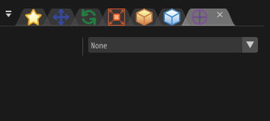

力场（Local）¶
概述¶
设定外力对粒子的影响。
Parameters¶

“力场（Local）”窗口
力场¶
最多可同时设置4种力场。
类型¶
无¶
粒子不受外力影响。
力¶
从指定的位置向外侧施加力。 也可以让远离指定位置的力场产生衰减。
风¶
朝向指定的方向施加力。 可以通过旋转改变方向。
龙卷风¶
施加绕指定方向旋转的力。 可以通过旋转改变轴的方向。
可以设置移动速度，使外侧的旋转速度和内侧相同，否则内外侧的移动速度是相同的。
湍流¶
施加具有湍流的力。
类型¶
你可以选择简单或复杂。 越复杂，视觉效果越好，但运算速度也更慢。
随机种子¶
通过随机种子产生随机的湍流。
粒度¶
值越大，湍流越宽。
强度¶
湍流的强度。
译注：似乎没有这个设置。也许是统一改成“力”了。
复杂度¶
值越大，湍流越复杂。但也会增大计算负担。
粘滞阻力¶
施加一个阻碍运动的力。
重力¶
在一个方向上施加加速度。重力可以朝向任意方向。且不会受到父节点的方向影响。
引力（需要设置引力点）¶
粒子向“行为”窗口中的“引力点”处移动。

引力¶
一帧中向目标位置的速度增量。
阻力¶
一帧中运动方向修正为目标方向的百分比，取值在0.00和1.00之间。
最小范围¶
引力开始衰减的距离。
最大范围¶
引力结束衰减的距离。当粒子的位置在0到最小范围之间时，引力为100%。如果位置大于最大范围，引力为0%。如果在最小范围和最大范围之间，引力线性插值。
力场的位置¶
设置力场中心的位置。 影响部分力场的行为。
力场的角度¶
设置力场的角度。 影响部分力场的行为。
衰减类型¶
在范围之外，力场的效果会衰减。 有几种方式指定范围。
球¶
远离球心时，力场会发生衰减。 衰减力越大，向外移动时力场衰减的越多。
管道¶
远离圆柱中轴线时，力场会发生衰减。 衰减力越大，向外移动时力场衰减的越多。
圆锥¶
这个圆锥是球的一部分切出来的。（在球的表面画一个圆，再与球心连接起来） 圆锥范围外的地方，力场会发生衰减。该位置和圆锥顶点的连线与圆锥轴线之间的夹角越大，衰减越大。 衰减力越大，向外移动时力场衰减的越多。